HarmonyOS a4aa58a91eaf and iPhone 698a1f789dff. Both app captures use synthetic Health records at 402 logical units. Hue, text, accessibility values, row geometry and server readback use the units in the original records.
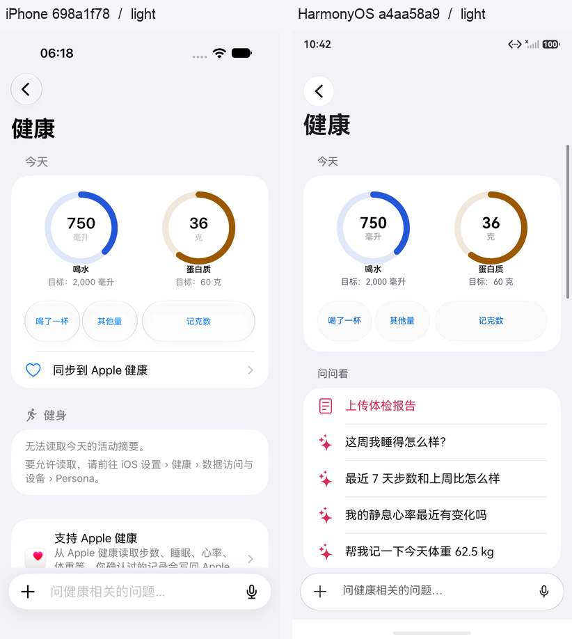
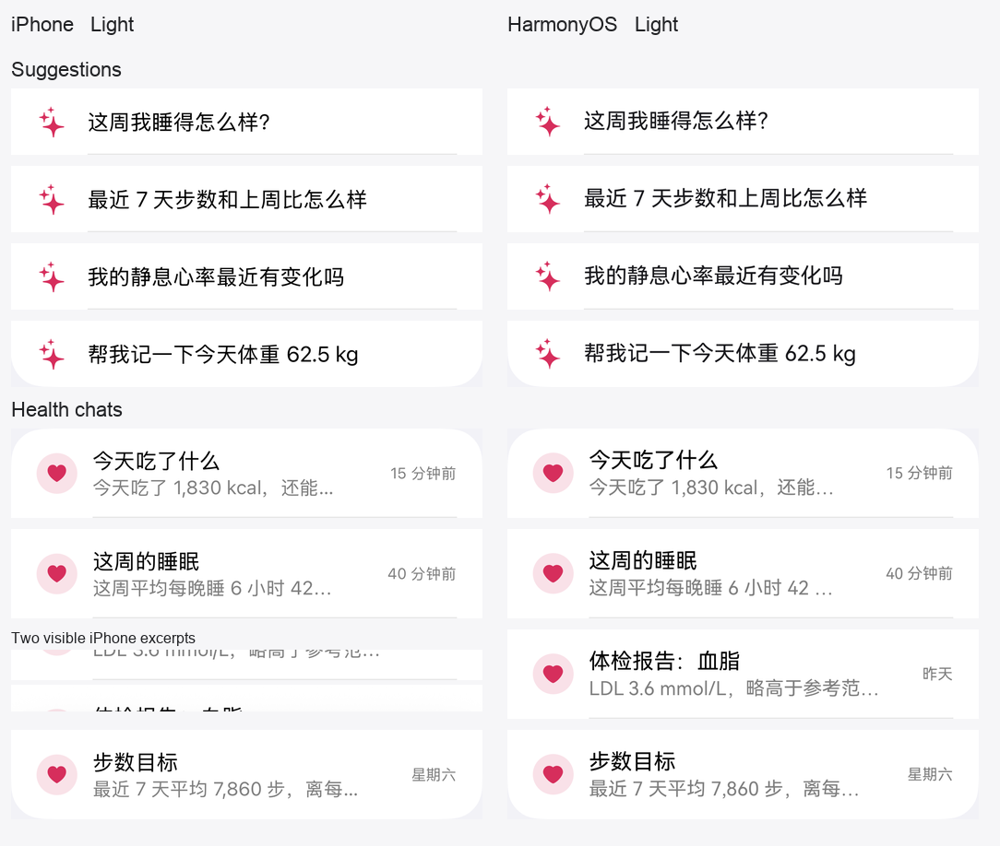
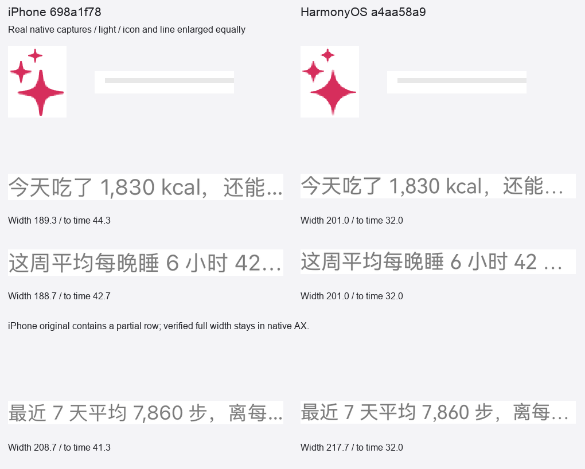
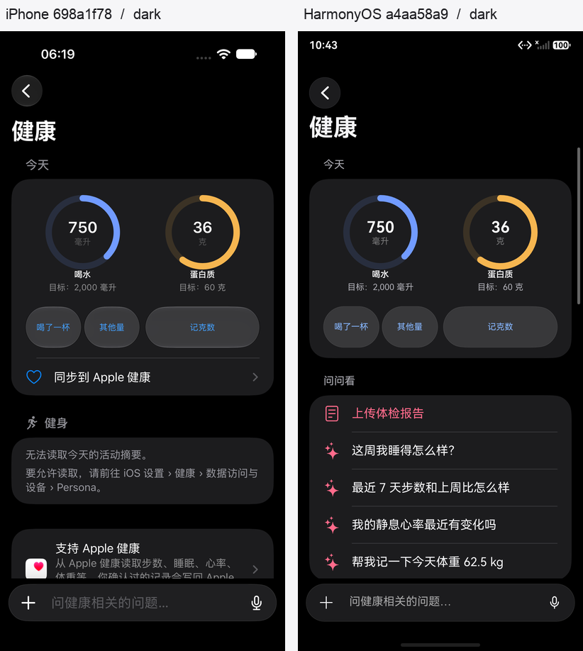
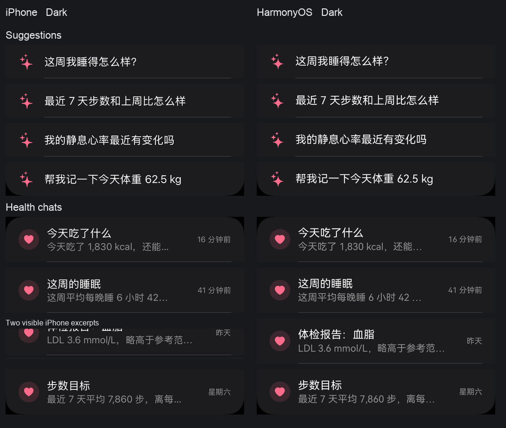
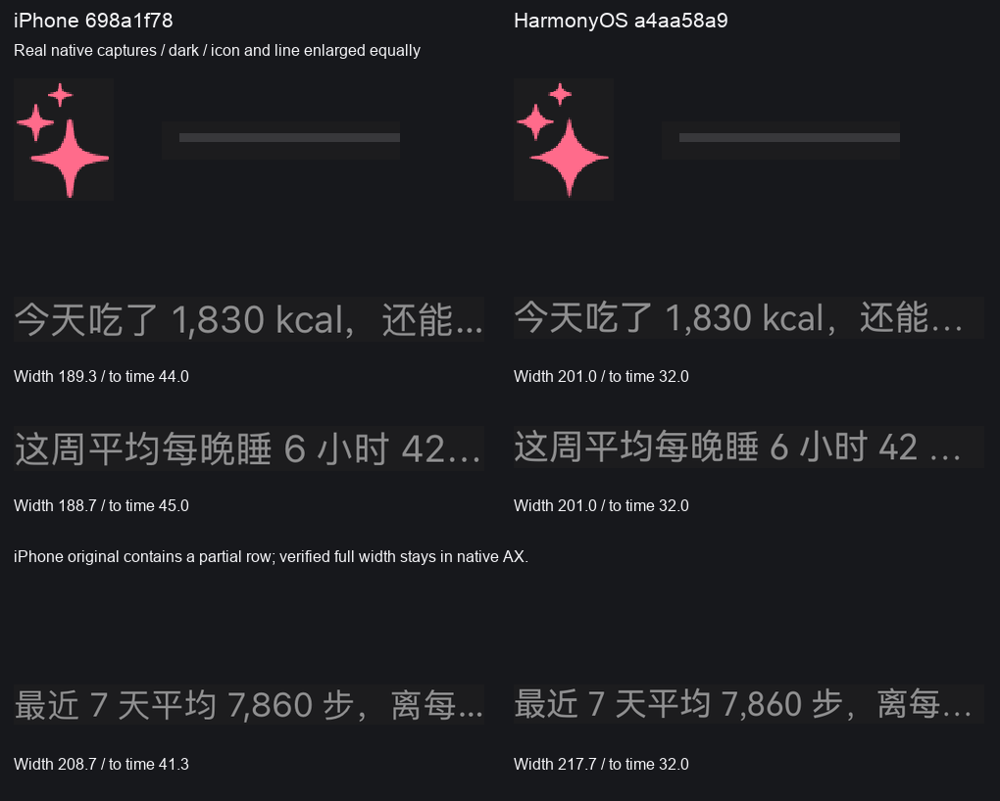
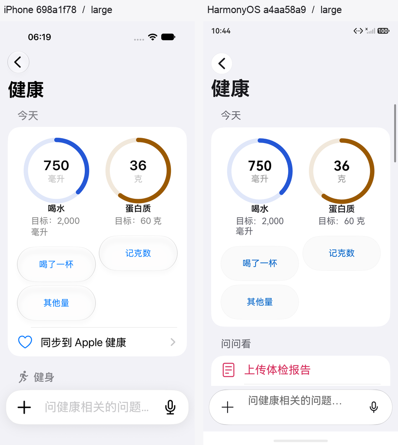
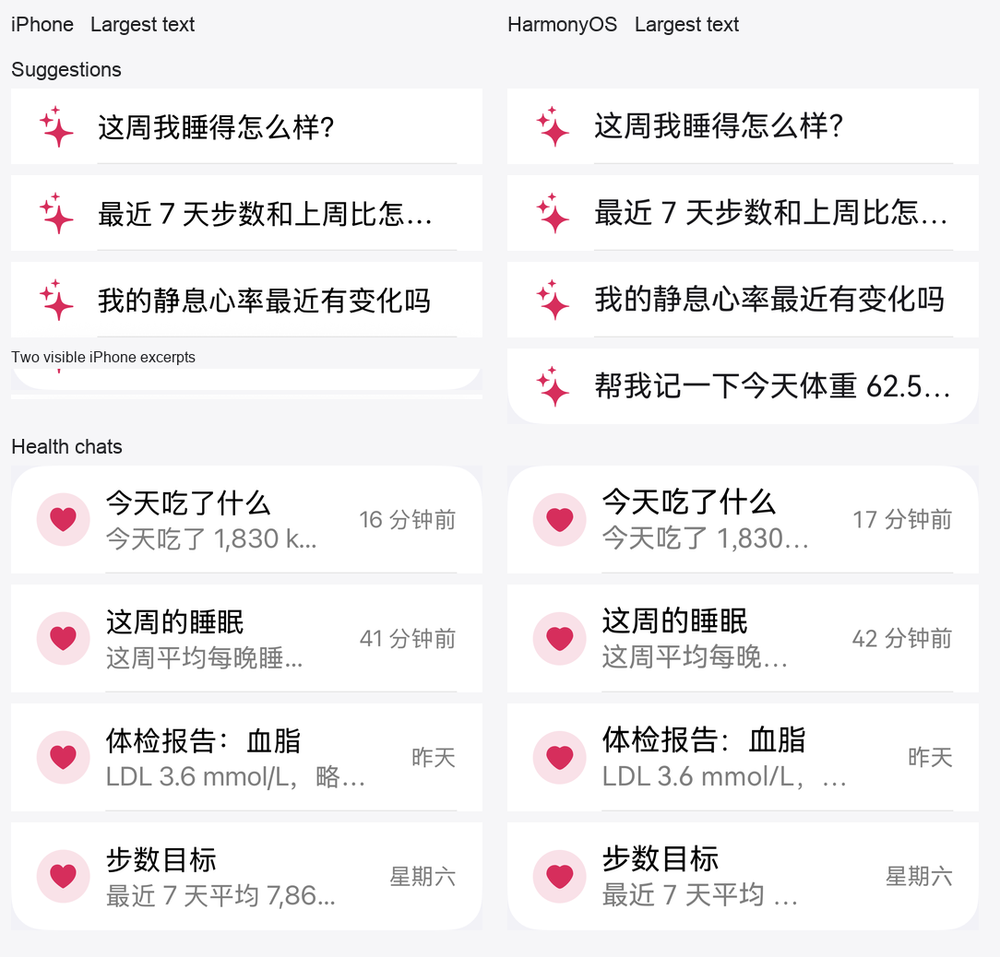
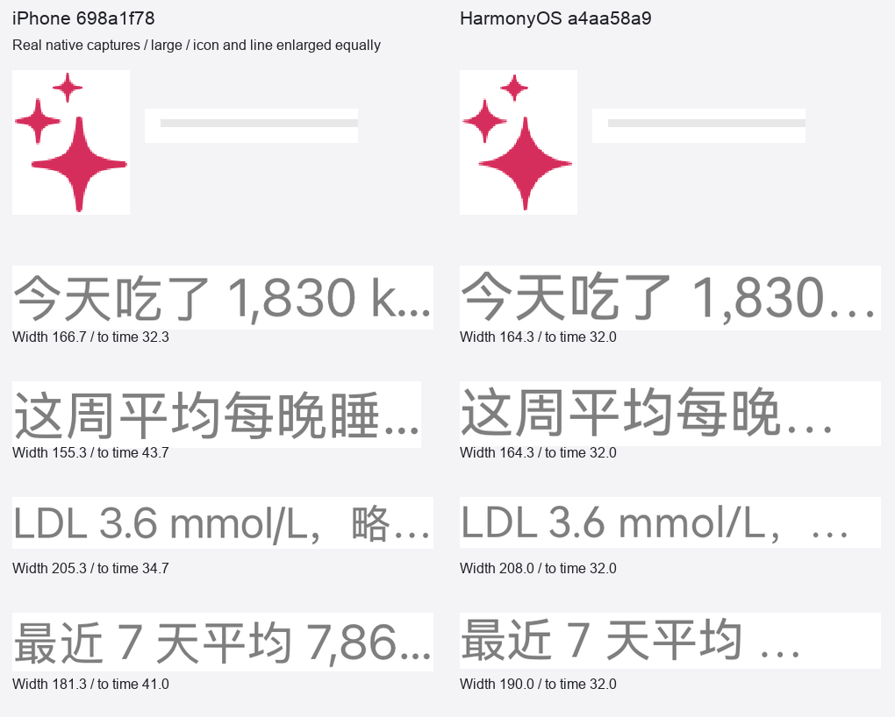
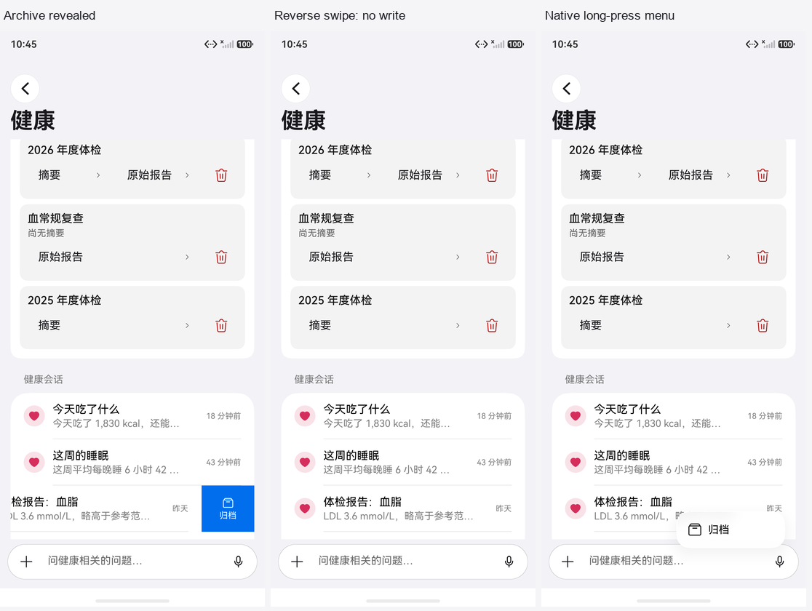
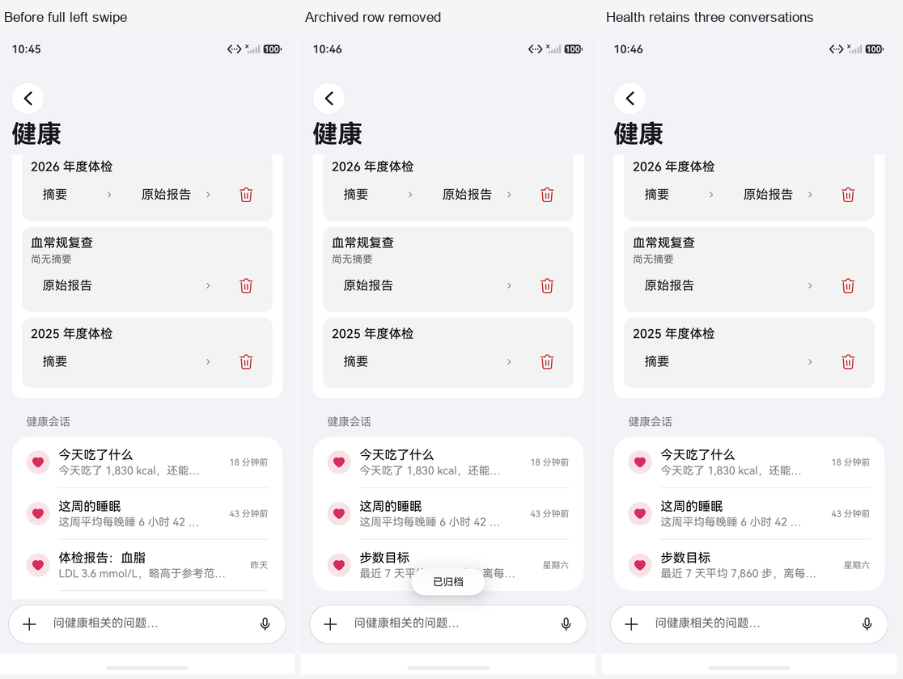
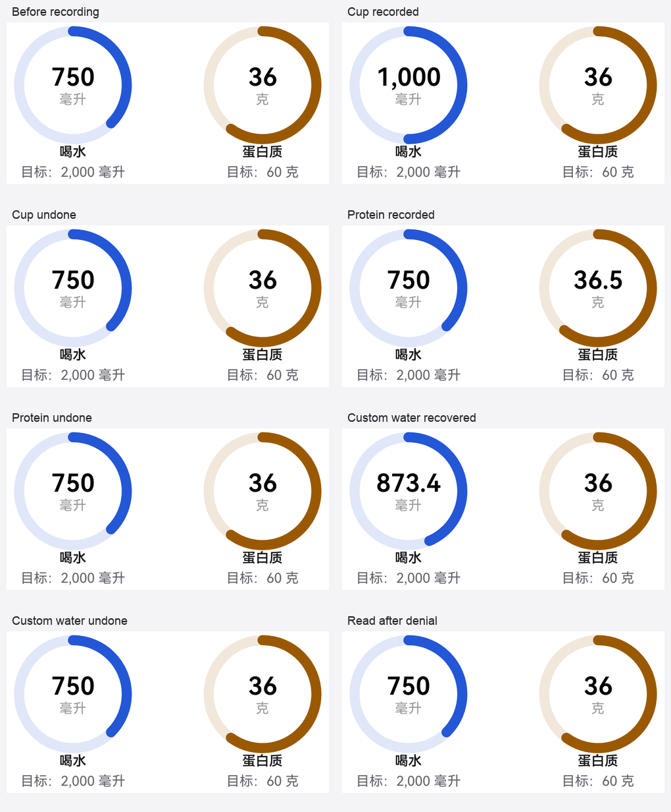